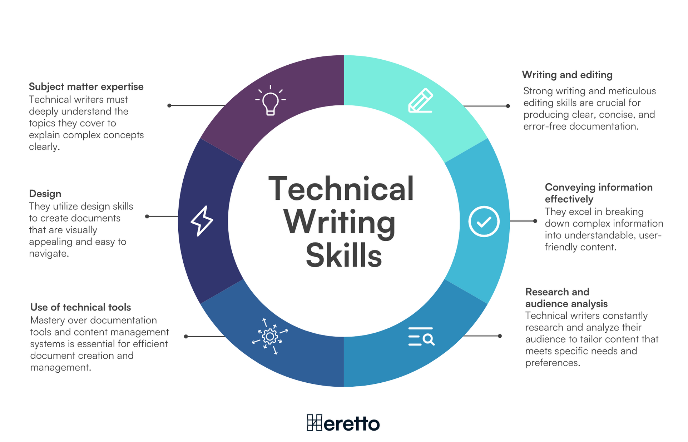
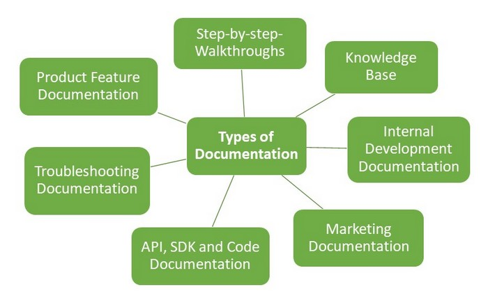
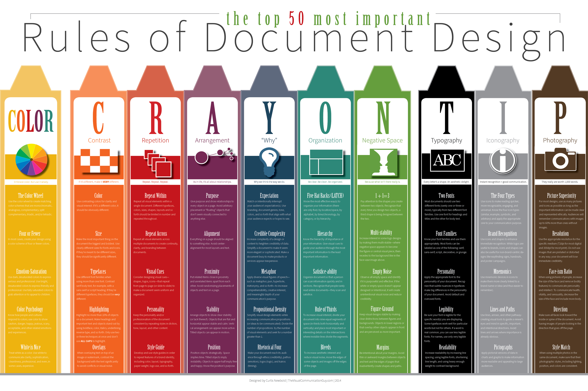
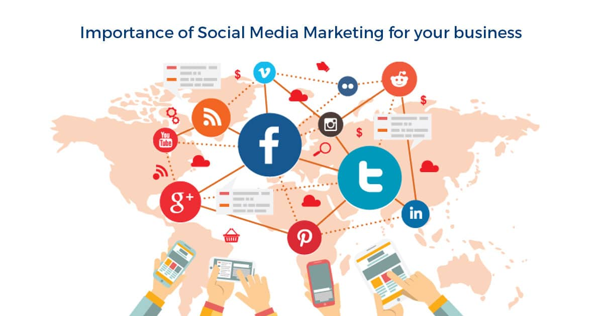
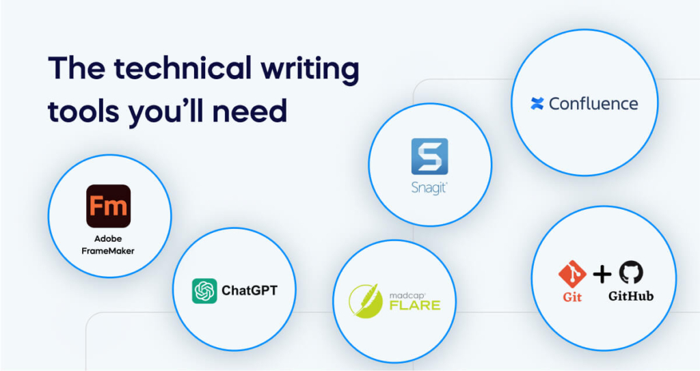

Welcome to How to Be Technical
I'm Precious Staggers, a beginner technical writer with a bit of experience simplifying complex concepts into clear, easy documentation. I’m currently attending the University of Arkansas Grantham for my degree in Computer Science where I have taken a course in Technical Writing. I have created video instructions, recommendation reports, and proposals. I’m skilled in tools like Adobe, Notepad++, Microsoft Office, Google Docs, etc.
I love technical writing because it’s all about making complex ideas easy to understand. Whether it’s breaking down hard processes, explaining how something works, or giving people the info they need to solve a problem, I enjoy the challenge of making technical topics accessible. My goal is to help aspiring technical writers improve their crafts and stay updated with trends. Through this blog, I want to share insights, resources, and practical tips that I’ve learned on my journey. When I’m not writing, I enjoy coding small websites, discovering UX design, and spending time with my four children, my sweet gems!
Let’s connect! Feel free to reach out on LinkedIn or comment in the Community section.
Resources
-
 Understanding Technical Writing
-
 Technical Types
-
 Document Design
-
Audience Awareness
-
 Importance of Social Media
-
 Tools of the Trade
-
Breaking Into the Industry
-
Community
Understanding Technical Writing
What is technical writing?
Technical writing is a way of explaining complicated ideas in a simple and clear way. It helps people understand how to use products, follow instructions, or learn about technical topics. You can find technical writing in manuals, user guides, reports, and online help articles.
The main goal of technical writing is to make information easy to understand for the reader. Whether it’s teaching somebody how to use software, assemble furniture, or understand a process, the writing should be clear and helpful.
Important Skills Every Technical Writer Needs
To be a good technical writer, you need these skills:
- Clear Writing – Explaining things in a simple and easy way.
- Research Skills – Finding the right information and making sure it’s accurate.
- Knowing the Audience – Understanding who will read the document and what they need.
- Good Formatting – Using headings, lists, and images to organize information.
- Teamwork – Working with experts to make sure everything is correct.
- Tech Knowledge – Learning new tools and software used for writing and design.
- Flexibility – Changing your writing style depending on the type of document.
How Technical Writing is Used in Different Industries
Technical writing is used in many jobs like:
- Technology – Writing guides for software, apps, and websites.
- Healthcare – Explaining medical procedures and writing patient guides.
- Engineering – Creating manuals for machines and safety instructions.
- Finance and Law – Writing legal documents, rules, and policies.
- Education – Creating training materials and online courses.
As technology changes, technical writers must keep learning new skills to stay up to date. Many now work with artificial intelligence, video tutorials, and interactive content to make information even easier to understand.
Technical Types
Software Documentation
Software documentation is a type of technical writing that explains how to use software products, tools, or systems. It contains things like installation guides, setup instructions, troubleshooting tips, and feature descriptions. The goal is to help users understand how the software works and how to use it effectively.
Examples:
- Installation guides for apps
- User guides for software
- FAQs for common issues
User Manuals
User manuals are detailed instructions designed to help people use a product or service. They are step-by-step guides, diagrams, and troubleshooting tips. The purpose is to make sure users can get the most out of the product without needing extra help.
Examples:
- Manual for setting up a new phone
- Instruction booklet for assembling furniture
Reports and Proposals
Reports and proposals are documents used to link research findings, project progress, or business plans. Reports usually show data and analysis, while proposals show a plan or solution to a problem. Both types of writing are formal and focused on presenting clear, evidence-based information.
Examples:
- Monthly project progress reports
- Business proposals for new initiatives
White Papers
White papers are reliable documents that give thorough information on a specific topic. They are used to explain a complicated issue, offer a solution, or promote a product or service. White papers are usually written for a professional audience and are backed by research and data.
Examples:
- A white paper on new cybersecurity threats
- A white paper discussing new technology in the healthcare industry
Standard Operating Procedures (SOPs)
Standard Operating Procedures (SOPs) are step-by-step instructions that describe how to perform specific tasks or processes within an organization. They are used to make sure consistency and quality in operations, and they contain safety or regulatory guidelines.
Examples:
- SOP for handling hazardous materials
- SOP for conducting employee performance reviews
API Documentation
API documentation explains how developers can use and put together an API (Application Programming Interface) into their software. It contains details on the API’s features, functions, endpoints, and how to interact with it. This type of documentation is highly technical and is written for developers.
Examples:
- Documentation for a payment gateway API
- Guide for using an AI API in an app development project
Document Design
Principles of Clear and Concise Writing
Good technical writing is clear and concise. It gives information in as few words as possible while still being thorough and understandable.
- Use simple, straightforward language.
- Avoid unnecessary words or technical jargon.
- Organize information logically, starting with the most important points.
- Focus on the needs of your audience, consider their knowledge and familiarity with the topic.
Effective Use of Typography, Spacing, and Layout
Document design plays an important part in readability. A well-designed document makes it easier for the reader to find and understand the information they need:
- Typography - Choose fonts that are easy to read. Sans-serif fonts (like Arial or Helvetica) are frequently used in technical writing.
- Spacing - Adequate line spacing and white space between paragraphs or sections help prevent the document from feeling crowded and overwhelming.
- Layout - Break the content into sections with headings, subheadings, and bullet points. This makes the document easier to scan and find key information quickly.
Creating Visuals and Infographics to Increase Understanding
Visual elements like diagrams, screenshots, and infographics can help explain hard concepts more clearly than words alone. When creating visuals:
- Use charts, diagrams, and images to simplify and backup text.
- Make sure visuals are labeled correctly and are related to the content.
- Keep visuals simple and avoid cluttering to maintain focus on the key message.
Audience Awareness
Identifying Your Target Audience
Understanding who will be reading your document is important. Different audiences will have different needs and expectations. Ask yourself:
- Who is the reader? Are they a beginner, an expert, or somewhere in the middle?
- What does the reader need to know? Consider what information is most important for the audience's goals.
Writing for Different Expertise Levels
When writing for different expertise levels, adjust the content and tone accordingly:
- For beginners, explain basic concepts and avoid jargon.
- For intermediate readers, give more detailed explanations and examples.
- For experts, focus on thorough information and avoid oversimplification.
Using Plain Language and Avoiding Jargon
One of the most important parts of technical writing is making sure that the language is accessible.
- Plain language means using everyday words and sentences that are easy to understand.
- Avoid jargon unless it’s necessary for the audience and clearly defined. Even experts appreciate simplicity in communication.
Importance of Social Media
Building an Online Presence as a Technical Writer
Social media platforms like LinkedIn, Twitter, and personal blogs are great ways to showcase your work, share industry insights, and connect with potential employers.
- Create a professional LinkedIn profile that shows off your technical writing skills and experience.
- Participate in industry discussions on platforms like Twitter to stay up to date on trends.
Networking Opportunities through LinkedIn and Professional Groups
Networking is important in the technical writing field. Join groups on LinkedIn or professional organizations like the Society for Technical Communication (STC) to connect with other writers, share experiences, and find job opportunities.
Blogging and Content Creation for Visibility in the Field
Starting a blog or creating content can help you establish yourself as an expert in the field. Share tips on technical writing, document design, and industry trends. Blogging can also make your work more visible to potential employers and clients.
Tools of the Trade
Common Software and Tools
Technical writers use different tools to create and manage their documents:
- Adobe FrameMaker - A professional tool for creating large documents.
- MadCap Flare - A tool used for creating content for multiple platforms, including web and print.
- Markdown - A lightweight markup language for creating formatted text.
- MS Word - A versatile tool used for writing and editing documents.
Version Control and Collaboration Tools
Collaboration tools are important for team-based writing projects:
- Git - A version control system that helps manage changes to documents and software.
- Google Docs - A cloud-based tool that allows multiple users to work on the same document at the same time.
- Confluence - A team collaboration tool used to create, share, and collaborate on documents.
AI and Automation in Technical Writing
Artificial intelligence (AI) is progressively being used to assist with technical writing tasks:
- AI can help generate drafts, suggest improvements, and automate repetitive tasks like formatting.
- Tools like Grammarly and Hemingway can help improve clarity and readability.
Breaking Into the Industry
How to Gain Experience and Build a Portfolio
To build a strong portfolio:
- Start by writing sample documents or volunteering for small projects.
- Offer to help create content for websites, blogs, or nonprofit organizations.
- Build a personal website to showcase your work and skills.
Certifications and Professional Organizations
Certifications can boost your credibility and marketability as a technical writer:
- STC (Society for Technical Communication) offers certifications and networking opportunities.
- The UX Writing Hub provides courses and resources on writing for user experience (UX).
Job Search Strategies and Interview Tips
To find technical writing jobs:
- Style your resume and portfolio to highlight important skills and experience.
- Use job boards and company websites to find openings.
- Prepare for interviews by practicing how you describe your process, explain your writing samples, and discuss your understanding of the target audience.
Importance of Social Media
Building an Online Presence as a Technical Writer
Social media platforms like LinkedIn, Twitter, and personal blogs are great ways to showcase your work, share industry insights, and connect with potential employers.
Networking Opportunities through LinkedIn and Professional Groups
Networking is important in the technical writing field. Join groups on LinkedIn or professional organizations like the Society for Technical Communication (STC) to connect with other writers, share experiences, and find job opportunities.
Blogging and Content Creation for Visibility in the Field
Starting a blog or creating content can help you establish yourself as an expert in the field. Share tips on technical writing, document design, and industry trends. Blogging can also make your work more visible to potential employers and clients.